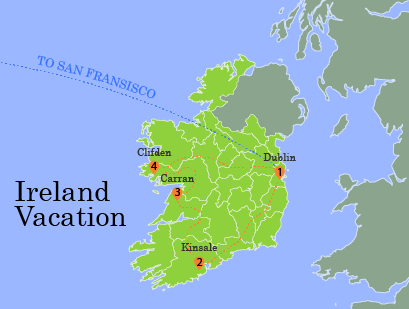

Trip to Ireland
{kind=link}
Arcata Marsh Mural
Describe some aspects of the map here. Download Image
This is my final semester at Humboldt State. When I am not in class, I am usually gardening or going on adventures with my boyfriend and our two dogs. I had a great time here, but am excited to move somewhere new and start a new career.
Describe some aspects of the map here. Download Image
Map of Unites States Capitals Download Image
National Parks in the United States Download Image
Schools and Apple Trees in Portland Oregon Download Image
Breweries Located in Humboldt County, California Download Image
This is a map showing the boundaries of Crater Lake National Park. Download Image
This map is meant for online access, to show the routes and stops for the red and gold routes in the Arcata and Mad River Tranisit System. Download Image
This map shows the results of the United States 2016 presidential election. The results are categorized by party votes, and displays the main results from each county. Download Image
This map was created using a 10 meter resolution digital elevation model to make a colored hillshade of the topography in Humboldt County. Using population data from the U.S. Census, the populations of the cities were classified using point symbols in order to show the varying population sizes throughout the county. Download Image

This map was created using a weighted overlay of community vulnerability data and ground shaking potential from a 7.8 magnitude earthquake along the San Andreas fault in the San Francisco Bay Area. Download Image

This StoryMap follows the journey of Rand al'Thor as he travels outside of the Two Rivers, to places he has only heard of. On his journey, he meets new friends, makes some enemies, and discovers who he really is. Download Image
Humboldt County on Terrain
Drop me a line
{kind=link}
{kind=link}
{kind=link}
{kind=link}
{kind=link}
{kind=link}
{kind=link}
{kind=link}
{kind=link}